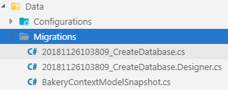
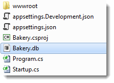
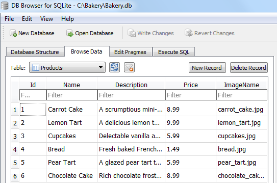

When developing applications, the model is likely to change often as new requirements come to light. The database needs to be kept in sync with the model. The Entity Framework Core migrations feature enables you to make changes to your model and then propagate those changes to your database schema. The migrations feature can also be used to create the database if it doesn't exist.
Configure the model
EF Core migrations are based on a set of conventions. The conventions govern how DbSet objects are mapped to tables in the database, how properties are mapped to columns, how .NET data types are mapped to suitable types exposed by the database provider and how keys and indexes are created and managed. Sometimes the conventions don't satisfy your needs, or EF Core is unable to determine your intentions. In these cases, you can use configuration to tell EF Core what you want.
Configuration can be applied in two ways; through decorating classes and properties with attributes, or by using the Fluent API. Attributes only provide a subset of configuration options. Therefore for any reasonably complex model, you are likely to need to rely on the fluent API for configuration. Consequently it makes sense to use fluent API for all configuration, thereby keeping your configuration code consistent and therefore easier to reason about, and in one place.
So where should you put your fluent API configuration code?
You have two options: you can place it directly in the OnModelCreating method of your DbContext class; or you can place configuration code on separate classes per entity. This example will demonstrate the latter approach, since it is the recommended way to manage this.
Add a new folder to the Data folder and name it Configurations. Then add a new C# class file named ProductConfiguration.cs to the Configurations folder. Replace the content with the following:
using Bakery.Models;
using Microsoft.EntityFrameworkCore;
using Microsoft.EntityFrameworkCore.Metadata.Builders;
namespace Bakery.Data.Configurations
{
public class ProductConfiguration : IEntityTypeConfiguration<Product>
{
public void Configure(EntityTypeBuilder<Product> builder)
{
builder.Property(p => p.ImageName).HasColumnName("ImageFileName");
}
}
}
The class implements the IEntityTypeConfiguration<TEntity> interface, which has one method: Configure. Configurations are defined in this method. In this instance, the ImageName property is mapped to a column named "ImageFileName". The default behaviour is to map to columns that are named the same as the property.
The configuration class is registered in the OnModelCreating method of BakeryContext as shown in the highlighted section:
public class BakeryContext : DbContext
{
public DbSet<Product> Products { get; set; }
protected override void OnConfiguring(DbContextOptionsBuilder optionsBuilder)
{
optionsBuilder.UseSqlite(@"Data source=Bakery.db");
}
protected override void OnModelCreating(ModelBuilder modelBuilder)
{
modelBuilder.ApplyConfiguration(new ProductConfiguration());
}
}
Create Seed Data
The original Bakery template included a database prepopulated with product data. When you first create the database, it will be empty - unless you "seed" it with data at the time that the migration is executed. In this section, you will use the API provided by EF Core (since version 2.1) for achieving this.
Create a new C# class file in the Data folder and name it ModelBuilderExtensions.cs. Replace the content with the following code:
using Bakery.Models;
using Microsoft.EntityFrameworkCore;
namespace Bakery.Data
{
public static class ModelBuilderExtensions
{
public static ModelBuilder Seed(this ModelBuilder modelBuilder){
modelBuilder.Entity<Product>().HasData(
new Product
{
Id = 1,
Name = "Carrot Cake",
Description = "A scrumptious mini-carrot cake encrusted with sliced almonds",
Price = 8.99m,
ImageName = "carrot_cake.jpg"
},
new Product
{
Id = 2,
Name = "Lemon Tart",
Description = "A delicious lemon tart with fresh meringue cooked to perfection",
Price = 9.99m,
ImageName = "lemon_tart.jpg"
},
new Product
{
Id = 3,
Name = "Cupcakes",
Description = "Delectable vanilla and chocolate cupcakes",
Price = 5.99m,
ImageName = "cupcakes.jpg"
},
new Product
{
Id = 4,
Name = "Bread",
Description = "Fresh baked French-style bread",
Price = 1.49m,
ImageName = "bread.jpg"
},
new Product
{
Id = 5,
Name = "Pear Tart",
Description = "A glazed pear tart topped with sliced almonds and a dash of cinnamon",
Price = 5.99m,
ImageName = "pear_tart.jpg"
},
new Product
{
Id = 6,
Name = "Chocolate Cake",
Description = "Rich chocolate frosting cover this chocolate lover's dream",
Price = 8.99m,
ImageName = "chocolate_cake.jpg"
}
);
return modelBuilder;
}
}
}
The Seed method is an extension method on the ModelBuilder type, which is passed in to the OnModelCreating method that you worked with earlier. The body of the method uses the HasData method introduced in EF Core 2.1 to configure the specified entity to have seed data. The values provided for each entity mirror those from the original template and include the key values. SQLite happily accepts values in an autoincrement column if they are provided as part of an INSERT statement. SQL Server, on the other hand, will enable IDENTITY_INSERT on the target table, and then turn it off again once the seed data has been added.
The seed method itself is called in the OnModelCreating method. It returns an instance of the ModelBuilderType, so it can be chained to other calls that also return the ModelBuilder type. The ApplyConfiguration fits this requirement, so you can chain the Seed method to that:
protected override void OnModelCreating(ModelBuilder modelBuilder)
{
modelBuilder.ApplyConfiguration(new ProductConfiguration()).Seed();
}
Create the migration
Now that the model configuration is complete and provision for seed data has been made, you can create the actual migration. Execute the following command from the terminal:
dotnet ef migrations add CreateDatabase --output-dir Data/Migrations
This creates a migration called CreateDatabase. The files for the migration are generated in a newly created folder named Migrations in the Data folder (as specified by the value passed to the output-dir switch):

The first file contains C# code that gets translated into SQL statements to be executed, while the snapshot file contains a C# representation of the current model. This is used by subsequent migrations to calculate the changes required to update the schema of the database.
Execute the migration
Having configured and created the migration, it is time to execute it. At the terminal, type the following and hit enter to execute the command:
dotnet ef database update
Once you get confirmation that the migration has been applied, you should see the Bakery.db file that has been created in the root of the site:

You can open this using a suitable utility. I use DB Browser For SQLite. You can explore the generated tables. The __EFMigrationsHistory table contains details of each migration. The products table contains the data that you seeded it with:

Summary
You have learned how to configure a model prior to a migration, generate seed data and then create a migration and execute it. Now that you have a database with data, you can start working with it.
Next: Working with Data
Previous: Creating a model